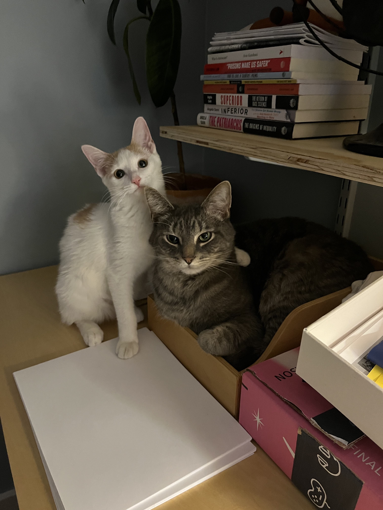

About the Cats
These are my two cats, Pabu (orange & white kitten) and Kindo (gray tabby). They love to hang out with me in my office while I work on homework. If you're curious about their names, Pabu's comes from the animated TV show "The Legend of Korra." In the show, Pabu is a fire ferret who's very lovable and mischievous, which is totally our Pabu's personality! Kindo's name comes from one of me and my husband's favorite bands called The Reign of Kindo. They're a piano jazz/rock/fusion group that's super funky. Kindo isn't funky so much as he is very particular about how he likes things! And he is always on the lookout for spare food or crumbs we leave behind.